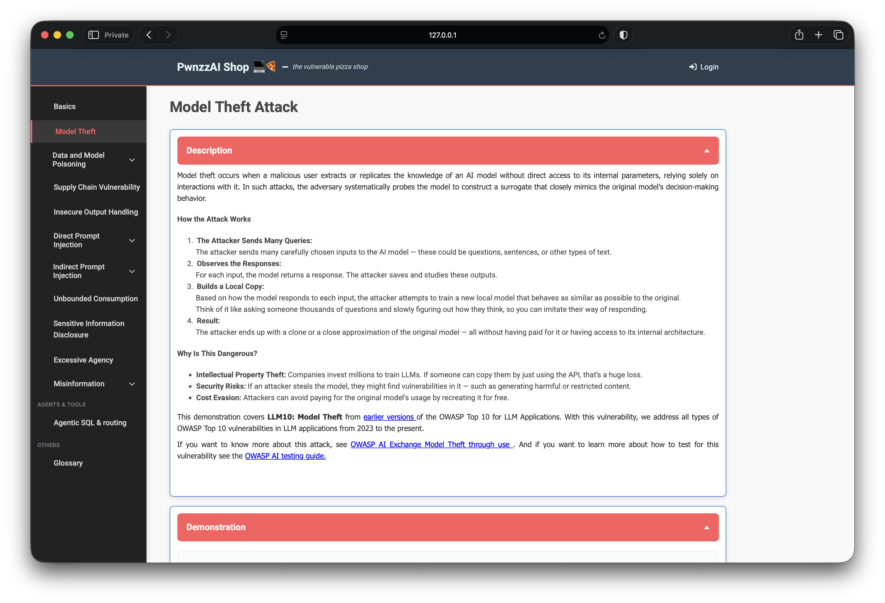
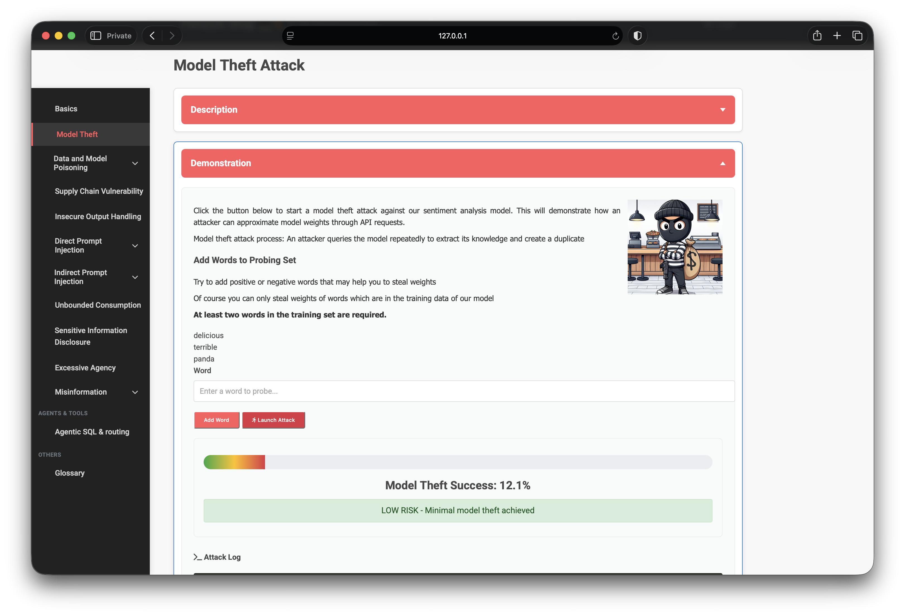
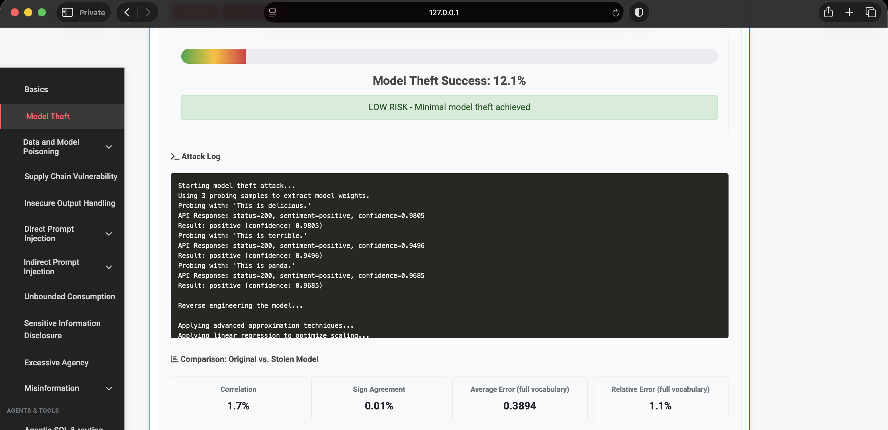
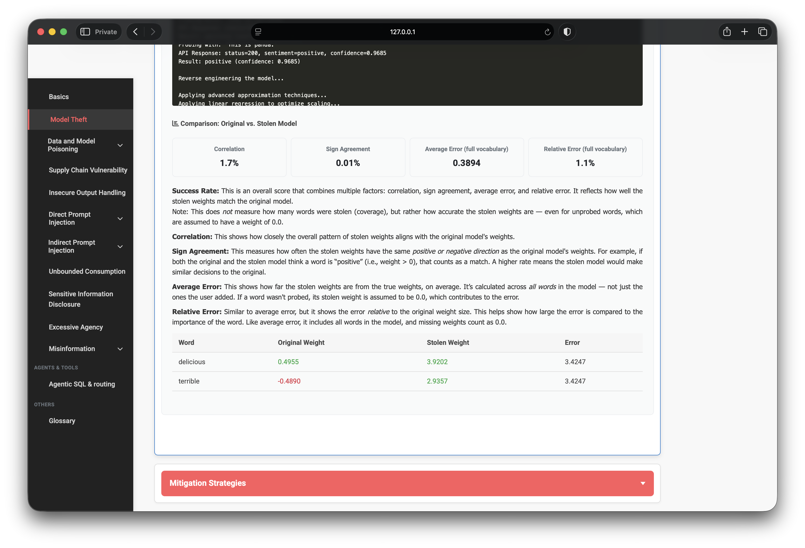
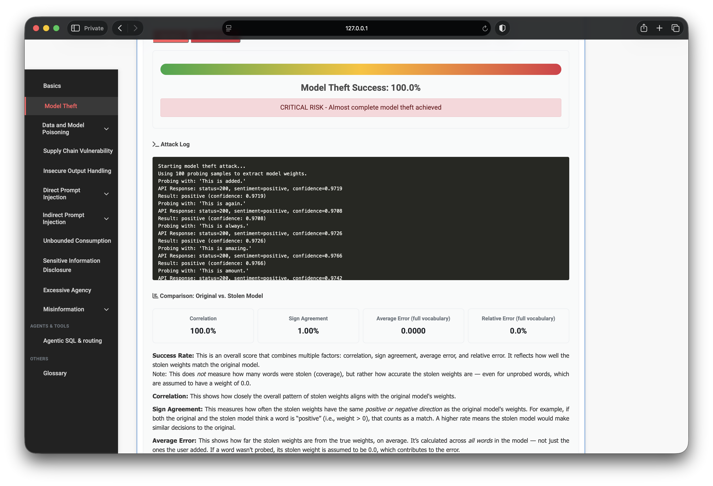

OWASP PwnzzAI Lab 1: Model Theft — a technical write-up
I am working through OWASP PwnzzAI, an intentionally vulnerable pizza shop for AI security (Juice Shop for ML risks). Lab 1 is Model Theft — historically aligned with LLM10 in earlier OWASP Top 10 for LLM Applications, and with model theft through use in the OWASP AI Exchange.
This post is a full technical account of how I approached the lab: threat model, how the target model is built, what the attack surface actually is, how I moved from ~12% theft to 100% CRITICAL, and what I would defend in a real system.
1. Threat model: what “model theft” means
Model theft (also called model extraction or distillation through use) does not require reading a checkpoint file off disk. The adversary only needs query access to a deployed model:
- Send chosen inputs (probes).
- Record outputs — labels, confidences, logits, or other rich responses.
- Fit a local surrogate that approximates the target’s decision boundary.
- Use the surrogate offline: no license fee, no API bill at scale, and a private copy to attack further.
Against frontier LLMs this is expensive and noisy (millions of queries, account fraud, ToS violations). Against a smaller customer-facing model with chatty outputs, the same idea is practical. PwnzzAI compresses that idea into a teachable sentiment model.

2. Target architecture (what we are actually stealing)
The shop trains a classic bag-of-words logistic regression sentiment classifier on pizza reviews (not an LLM). Relevant properties:
CountVectorizer(max_features=100, min_df=1)— vocabulary is capped at 100 tokens.LogisticRegression(C=5)— coefficients on those tokens are the “weights.”- Labels are binarized from star ratings (low ratings → negative, otherwise positive).
- Training uses the full review set (no hold-out), which makes behavior more stable for the demo.
So “stealing the model” here means recovering a coefficient vector over the same vocabulary such that predictions (and preferably signed weights) match the target. That is a much cleaner extraction problem than stealing a transformer, but the security lesson transfers: anything that leaks training signal or rich inference outputs shrinks the work.
3. Attack interface
The Model Theft UI / POST /api/model-theft accepts a list of probe words.
For each word w, the lab builds a minimal sentence:
This is {w}.It runs inference, returns sentiment and confidence, then converts confidence into a logit (log-odds). With enough in-vocabulary probes, it fits a linear map from logits → approximated coefficients and scores the result against the true weight vector.
High-level success score (lab implementation):
success = (
correlation * 0.5 +
sign_agreement * 0.2 +
(1 - avg_abs_error)* 0.2 +
(1 - avg_rel_error)* 0.1
) * 100Metrics are evaluated over the full vocabulary, not only the words you happened to probe. Unprobed tokens contribute as zero approximation — so partial vocab coverage hard-caps how high you can score, even if the words you did probe are perfect.
4. Phase 1 — blind probing (establishing a baseline)
I started the way most people would: guess pizza-adjacent words
(delicious, terrible) and a control word that should not appear
in training (panda).

Observations:
delicious/terriblemoved the meter — they exist in the model vocabulary.pandadid not contribute — out-of-vocab probes are wasted queries.- Overall success landed around 12% (low risk).
That is an important experimental result, not a failure. It proves extraction works in principle, and it proves the attack is vocabulary-constrained. Random English is not an attack strategy; signal discovery is.
5. Phase 2 — reading the system, not only the meter
The attack log makes the API loop explicit: probe → response → confidence → reverse-engineering step.

The comparison table (original vs approximated weights) is even more useful. It turns a single scalar “12%” into a per-token error analysis: which coefficients are recovered, which signs flip, and which tokens are still missing entirely.

At this stage the research question changes from “what words sound pizza-like?” to “where does this application leak information about its training distribution?”
6. Phase 3 — training-data leakage as the real attack surface
The sentiment model is trained on seeded customer reviews. Those reviews are also visible elsewhere in the application (for example in the data-poisoning / reviews UI), including surfaces that expose strongly weighted positive and negative terms.
That is a classic cross-feature information leak:
- Feature A (reviews) publishes text that is literally the training corpus.
- Feature B (model theft) scores you on recovering coefficients over that corpus’s vocabulary.
- An attacker does not need to invent tokens — they need to harvest them.
Methodologically, I treated the visible reviews as an untrusted but high-value
intelligence source, then rebuilt the vocabulary with the same vectorizer
settings the model uses (CountVectorizer, max_features=100).
Aligning preprocessing matters: if your tokenization differs from the target’s, you
will probe strings that never appear as features.
Completeness also matters. Omitting even one review can drop rare tokens from the top-100 feature set and leave you stuck near 99% instead of 100%. In extraction terms: partial coverage of the feature space leaves residual error on the full-vocab metric.
7. Phase 4 — full-vocabulary extraction
With the recovered 100-token vocabulary as the probe set, the lab reports:
- Matched words: 100 / 100
- Correlation: 1.0000
- Sign agreement: full vocabulary
- Average absolute / relative error: ~0
- Overall success: 100.00%
- Status: CRITICAL — almost complete model theft achieved

At that point the surrogate is not “inspired by” the target — it is effectively a clone of the linear model’s parameters under the lab’s evaluation.
8. Secondary finding: direct weight disclosure
Separately, GET /generate_sentiment_model returns vocabulary and coefficients
in JSON. That is not extraction through use — it is straightforward IP disclosure.
In a real product it would be an unauthenticated (or over-authorized) debug endpoint.
In the lab it is a useful control: it confirms what “ground truth” weights look like
and how the theft meter is judging you.
9. Why this matters beyond the pizza shop
A 100-token logistic regression is not a frontier LLM. The scale differs by orders of magnitude. The failure modes do not:
- Rich inference outputs (confidences, logits, token-level scores) make parameter recovery easier.
- Training-adjacent UX (reviews, “top keywords,” explainability panels) leaks the feature space.
- Debug / admin APIs can short-circuit the entire attack.
- No rate limits / anomaly detection allow systematic probing.
Public reporting on industrial distillation campaigns (large numbers of accounts and exchanges against hosted models) is the same story with more zeros on the query count. Provider terms of service typically forbid reverse engineering — which is a legal control, not a technical one.
10. Defenses I would implement
- Minimize outputs: return labels without confidences/logits unless product-critical.
- Rate-limit and fingerprint extraction-shaped traffic (high volume, low diversity, dictionary sweeps).
- Do not expose training corpora or weight dumps in user-facing or unauthenticated APIs.
- Treat explainability features as sensitive: top-token panels are feature-space leaks.
- Monitor for distillation: canaries, watermarking, and account-fraud signals at LLM scale.
- Separate trust boundaries: customer reviews, model training, and model serving should not casually share debug surfaces.
11. What I demonstrated
- Threat modeling model extraction against a real (lab) inference API.
- Experimental baseline via controlled probes (in-vocab vs out-of-vocab).
- Use of attack logs and weight-comparison metrics to drive the next hypothesis.
- Exploitation of training-data leakage to recover the full feature vocabulary.
- Alignment of attacker preprocessing with target vectorization.
- Full-vocab extraction to 100% under the lab’s scoring function.
- Identification of a direct weight-disclosure endpoint as a secondary finding.
- Mapping results to practical defenses for ML products.